Introduction
Regardless of your programming language of preference, data visualization is paramount to understanding complex patterns in data. This tutorial offers an illustration of the entire data visualization process, including all of the steps that have to be taken before we can visualize the data. Given this focus on outlining the process of visualizing data, this tutorial does not offer a comprehensive understanding of the principles underlying data visualization.
Therefore, the tutorial provides a very brief overview of:
- Importing and summarizing data
- Preparing data for visualization
- Creating and interpreting graphs
This tutorial uses several packages from the tidyverse library in R, as well as the reticulate package which provides a comprehensive set of tools for interoperability between Python and R. The Python libraries utilized in this tutorial are pandas for importing, summarizing, and manipulating data, as well as [ADD THE ONES FOR VISUALIZATION].
Parts of this tutorial are adapted from material used in workshops run by the Hertie Data Science Lab in Berlin, which I work on as a Teaching Assistant to Therese Anders and other instructors from the Hertie School of Governance.
Note: In this version of the tutorial, all code in Python is not run due to errors in knitting the .Rmd file. For this reason, all exercises in this version are in R.
Importing data
In this example, we will use data from the FiveThirtyEight Presidential Endorsement Tracker.
Reading .csv files from a URL
Most data formats we commonly use are not native to R or Python and need to be imported. One of the ways we can import this data is to read in a .csv file from a URL. Here, we use the foreign package in R and pandas library in Python to read a .csv file and import data frames.
library(foreign)
df <- read.csv("https://projects.fivethirtyeight.com/endorsements-2020-data/endorsements-2020.csv")The equivalent in Python is:
import pandas as pd
df = pd.read_csv("https://projects.fivethirtyeight.com/endorsements-2020-data/endorsements-2020.csv")An alternative method of importing data from FiveThirtyEight in R
Alternatively, we can use the fivethirtyeight package in R to import data. It is important to note that the same dataset imported from different sources may differ, as sources are often updated separately.
library(fivethirtyeight)
df1 <- fivethirtyeight::endorsements_2020Summarizing data
Retrieving an overview of the data
Before we prepare data for visualization, it is generally a good idea to understand what we’re working with. In R and Python, some functions for summarizing data are as follows:
| R | Python | Function |
|---|---|---|
summary(df) |
df.describe() |
Produces an overview of the data |
head(df) |
df.head() |
Returns the first few rows of a data frame |
tail(df) |
df.tail() |
Returns the last few rows of a data frame |
dim(df) |
df.shape |
Retrieves the dimensions of the data |
str(df) |
df.info() |
Displays the structure of a data frame |
Cross-tabulations
To fully understand the data we are working with, it is also important to look at frequency tables for individual variables.
Let’s suppose we want to know more about which category of politician has given out the most endorsements. In R, we can retrieve this data using the following code:
table(df$category)##
## Candidates who have dropped out Current party leaders
## 11 6
## DNC members Former party leaders
## 413 21
## Governors Mayors
## 29 47
## Past nominees Past presidents and vice presidents
## 5 5
## Representatives Senators
## 231 43
## State legislative leaders Statewide officeholders
## 105 104In Python, we can use the pandas value_counts() function on our column of interest to retrieve frequency counts.
df['category'].value_counts()Exercise 1 - Understanding the data
Run each code chunk and answer the questions below.
summary(df)head(df)dim(df)Exercise 2 - Creating a cross-tabulation
Let’s suppose we want to know about who has the most endorsements to date (endorsee). Retrieve the frequency counts from the corresponding variable in data frame df.
Exercise 3 - Interpreting the results of a cross-tabulation
##
## Amy Klobuchar Bernie Sanders
## 703 17 32
## Cory Booker Elizabeth Warren Jay Inslee
## 18 40 4
## Joe Biden John Delaney Julian Castro
## 117 1 1
## Kamala Harris Kirsten Gillibrand Michael Bennet
## 21 1 3
## Michael Bloomberg Pete Buttigieg Steve Bullock
## 39 19 2
## Tom Steyer
## 2Preparing data for visualization
In practice, data visualization is only the last part in a long stream of data gathering, cleaning, wrangling, and analysis. Only a very brief overview of the data wrangling tasks necessary for the illustrated example are elaborated, so if you do not have a strong background in data wrangling in R, RStudio offers a great data wrangling cheat sheet for your perusal.
dplyr 101
dplyr uses a strategy called “Split - Apply - Combine” for data mining. Some of the key functions include:
select(): Subset columns.filter(): Subset rows.mutate(): Change or add columns to existing data.group_by(): Converting data frames to grouped tablessummarise(): Summarizing data set.arrange(): Reorders rows.
We can use select() and filter() to subset the 2020 Presidential Endorsement data in R, and mutate() to change variable types:
df_subset <- df %>%
# Selecting columns
dplyr::select(date,
endorser:source,
category,
points
) %>%
# Excluding columns (but keeping all others)
dplyr::select(-source) %>%
# Filtering out NAs (a.k.a. missing values)
dplyr::filter(!is.na(endorsee)) %>%
# Changing the class of variables
dplyr::mutate(points = as.numeric(points),
endorsee = as.factor(endorsee)) # factor variables are ideal for categories To prepare data for visualizing the number of endorsements per candidate, group_by(), summarize() and arrange() are particularly useful.
by_endorsee <- df_subset %>%
# Using group_by() to create grouped data frame of endorsees
dplyr::group_by(endorsee) %>%
# Using summarize to generate # endorsements per candidate variable
dplyr::summarize(n_endorsements=n()) %>%
# Using arrange to order # endorsements from highest to lowest
dplyr::arrange(n_endorsements)tidyr 101
Data typically does not come in the format that we need for visualization. In general, we want data in the following format:
- Each variable forms a column.
- Each observation forms a row1.
- For panel data, the unit (e.g. country) and time (e.g. year) identifier form columns.
The tidyr package offers two main functions for data reshaping:
pivot_longer(): Shaping data from wide to long.pivot_wider(): Shaping data from long to wide.
For wide data formats, each unit’s responses are in a single row. For example:
| Candidate | Party | # Endorsements 2019 | # Endorsements 2020 |
|---|---|---|---|
| A | Dem | 56 | 58 |
| B | Dem | 40 | 45 |
For long data formats, each row denotes the observation of a unit at a given point in time. For example:
| Candidate | Party | Year | # Endorsements |
|---|---|---|---|
| A | Dem | 2019 | 56 |
| A | Dem | 2020 | 58 |
| B | Dem | 2019 | 40 |
| B | Dem | 2020 | 45 |
An additional function that is particularly useful for data preparation is tidyr::separate(), which separates a single column into multiple columns.
We can use dplyr and tidyr functions to finalize preparation of the 2020 Presidential Endorsement data for visualization:
df_final <- df_subset %>%
# extract year from date variable
tidyr::separate(date,c("year","month","day"),sep="-",) %>%
dplyr::select(-c("month","day")) %>%
dplyr::group_by(endorsee,year) %>%
dplyr::summarize(n_endorsement=n())## Warning: Expected 3 pieces. Missing pieces filled with `NA` in 703 rows
## [318, 319, 320, 321, 322, 323, 324, 325, 326, 327, 328, 329, 330, 331, 332,
## 333, 334, 335, 336, 337, ...].How do I do all of this in Python?
Good question!
Some of the common functions for pre-visualization data wrangling in R and Python are as follows:
| R | Python | Function |
|---|---|---|
summary(df) |
df.describe() |
Produces an overview of the data |
head(df) |
df.head() |
Returns the first few rows of a data frame |
tail(df) |
df.tail() |
Returns the last few rows of a data frame |
dim(df) |
df.shape |
Retrieves the dimensions of the data |
str(df) |
df.info() |
Displays the structure of a data frame |
[Parallel examples]
Creating and interpreting graphs
Barplots
Faceting
DELETE EVERYTHING BELOW THIS HEADING
Aesthetics
Aesthetics for bars
geom_bar() and geom_col() can use several aesthetics:
- alpha
- color
- fill
- linetype
- size
One of these, color, creates the most surprising results. Predict what the code below will return and then run it.
ggplot(data = diamonds) +
geom_bar(mapping = aes(x = cut, color = cut))fill
The color aesthetic controls the outline of each bar in your bar plot, which may not be what you want. To color the interior of each bar, use the fill aesthetic:
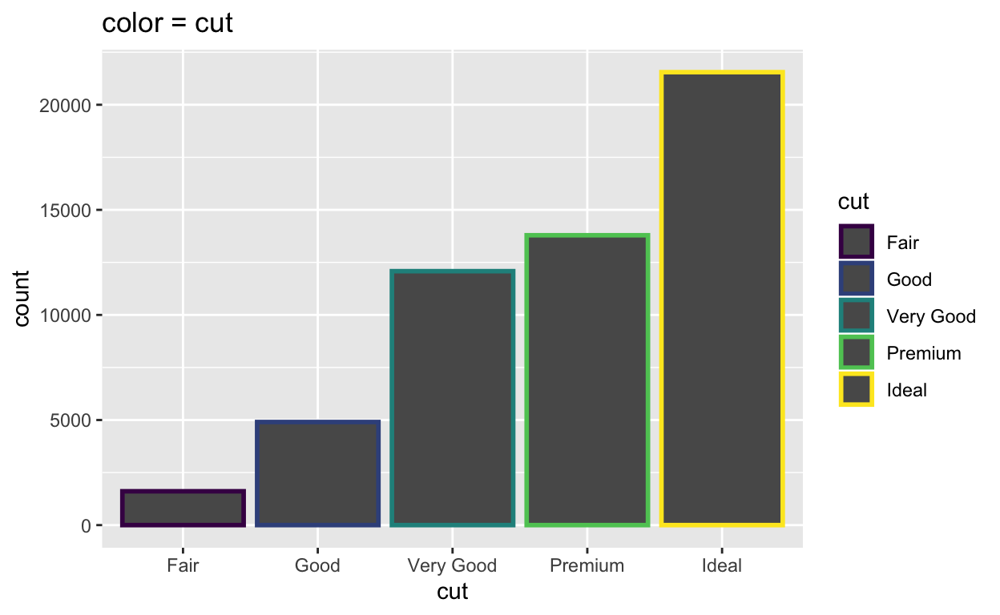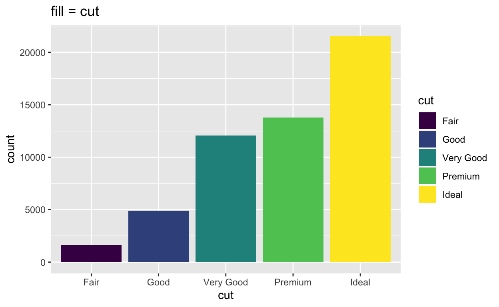
Use the code chunk below to experiment with fill, along with other geom_bar() aesthetics, like alpha, linetype, and size.
ggplot(data = diamonds) +
geom_bar(mapping = aes(x = cut, color = cut))Width
You can control the width of each bar in your bar chart with the width parameter. In the chunk below, set width = 1, then width = 0.5. Can you spot the difference?
ggplot(data = diamonds) +
geom_bar(mapping = aes(x = cut, fill = cut), width = 0.9)Notice that width is a parameter, not an aesthetic mapping. Hence, you should set width outside of the aes() function.
Exercise 5 - aesthetics
Create a colored bar chart of the class variable from the mpg data set, which comes with ggplot2. Map the interior color of each bar to class.
quiz(caption = "",
question("Who has the most endorsements to date?",
answer("Bernie Sanders"),
answer("Elizabeth Warren"),
answer("Michael Bloomberg"),
answer("Joe Biden", correct = TRUE),
allow_retry = TRUE
)
)ggplot(data = mpg) +
geom_bar(mapping = aes(x = class, fill = class))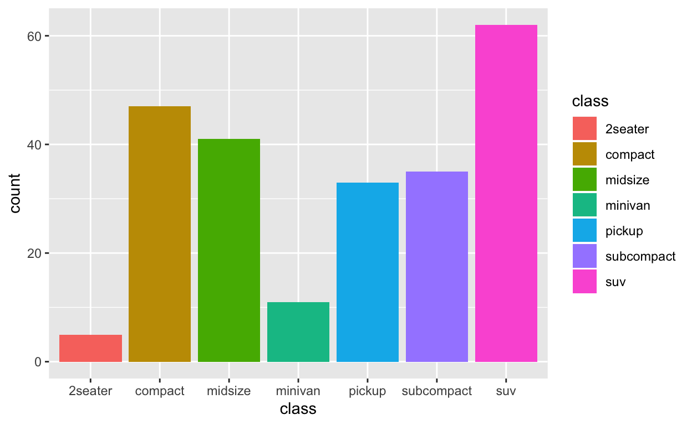
Position adjustments
Positions
If you map fill to a new variable, geom_bar() will display a stacked bar chart:
ggplot(data = diamonds) +
geom_bar(mapping = aes(x = cut, fill = clarity))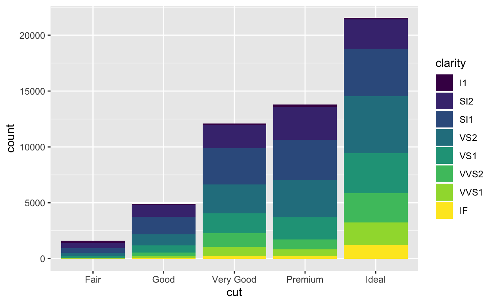
This plot displays 40 different combinations of cut and clarity, each displayed by its own rectangle. geom_bar() lays out the rectangles by stacking rectangles that have the same cut value on top of one another. You can change this behavior with a position adjustment.
Position = “dodge”
To place rectangles that have the same cut value beside each other, set position = "dodge".
ggplot(data = diamonds) +
geom_bar(mapping = aes(x = cut, fill = clarity), position = "dodge")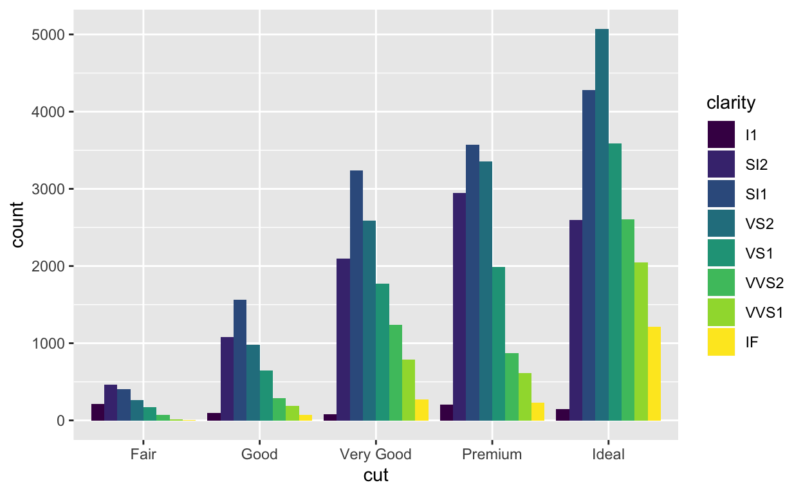
This plot shows the same rectangles as the previous chart; however, it lays out rectangles that have the same cut value beside each other.
Position = “stack”
To create the familiar stacked bar chart, set position = "stack" (which is the default for geom_bar()).
ggplot(data = diamonds) +
geom_bar(mapping = aes(x = cut, fill = clarity), position = "stack")
Position = “fill”
To expand each bar to take up the entire \(y\) axis, set position = "fill". ggplot2 will stack the rectangles and then scale them within each bar.
ggplot(data = diamonds) +
geom_bar(mapping = aes(x = cut, fill = clarity), position = "fill")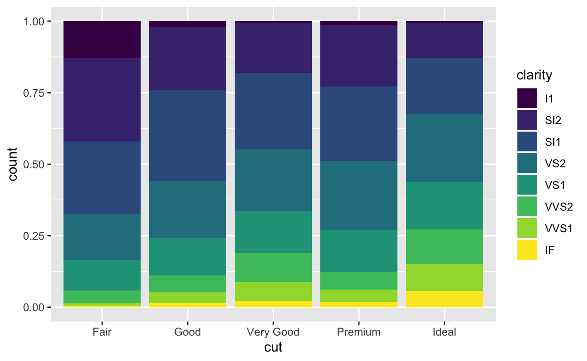
This makes it easy to compare proportions. For example, you can scan across the bars to see how the proportion of IF diamonds changes from cut to cut.
What is a position adjustment?
Every geom function in ggplot2 takes a position argument that is preset to a reasonable default. You can use position to determine how a geom should adjust objects that would otherwise overlap with each other.
For example, in our plot, each value of cut is associated with eight rectangles: one each for I1, SI2, SI1, VS2, VS1, VVS2, VVS1, and IF. Each of these eight rectangles deserves to go in the same place: directly above the value of cut that it is associated with, with the bottom of the rectangle placed at count = 0. But if we plotted the plot like that, the rectangles would overlap each other.
Here’s what that would look like if you could peek around the side of the graph.

Position = “identity”
..and here’s what that would look like if you could see the graph from the front. You can make this plot by setting position = "identity".
ggplot(data = diamonds) +
geom_bar(mapping = aes(x = cut, fill = clarity), position = "identity")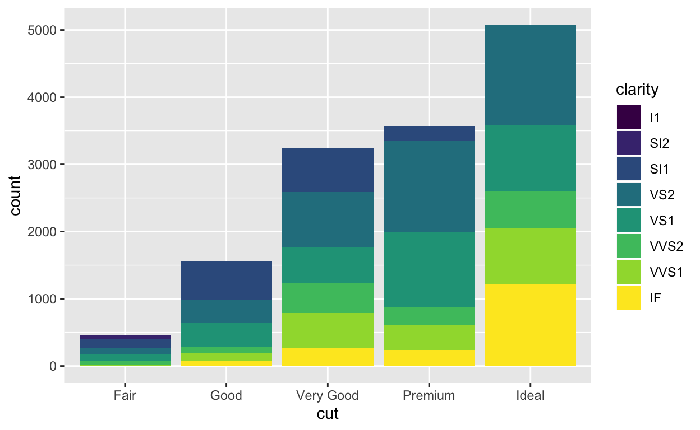
Position adjustments tell ggplot2 how to re-distribute objects when they overlap. position = "identity" is the “adjustment” that let’s objects overlap each other. It is a bad choice for bar graphs because the result looks like a stacked bar chart, even though it is not.
Exercise 6 - Positions
Use the code chunk to recreate the plot you see below. Remember: color is the name of a variable in diamonds (not to be confused with an aesthetic).
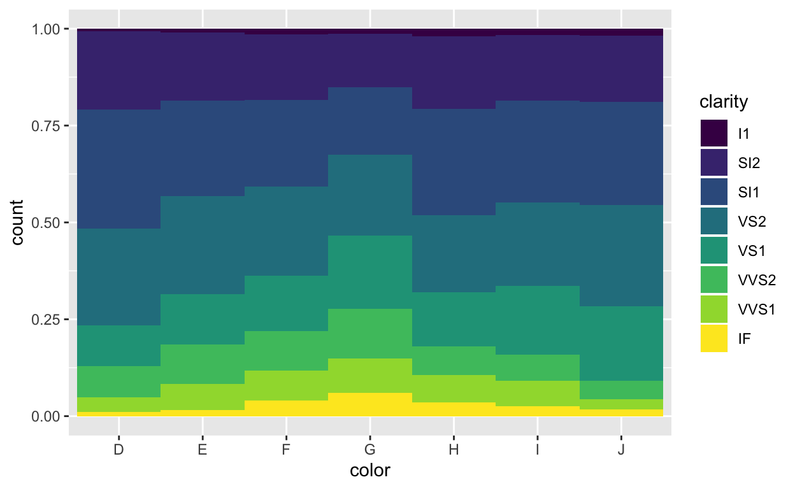
ggplot(data = diamonds) +
geom_bar(mapping = aes(x = color, fill = clarity), position = "fill", width = 1)Exercise 7 - Positions
Use the code chunk to recreate the plot you see below. Remember: color is the name of a variable in diamonds (not to be confused with an aesthetic).
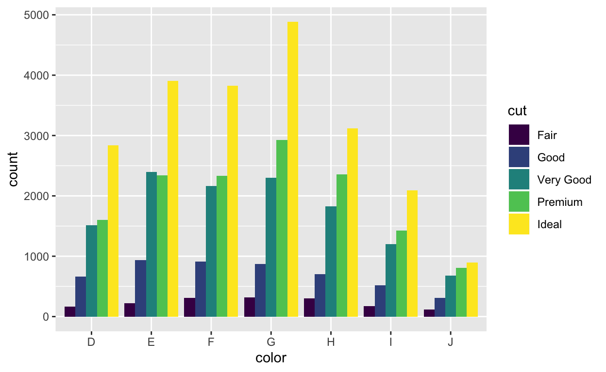
ggplot(data = diamonds) +
geom_bar(mapping = aes(x = color, fill = cut), position = "dodge")
Exercise 8 - position = “identity”
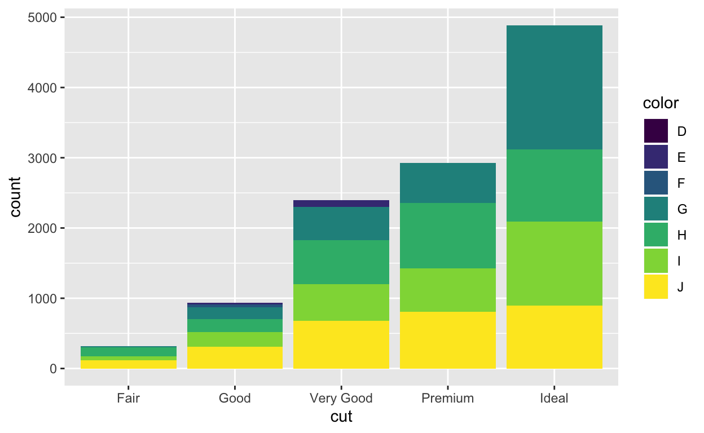
Facets
Faceting
You can more easily compare subgroups of data if you place each subgroup in its own subplot, a process known as faceting.
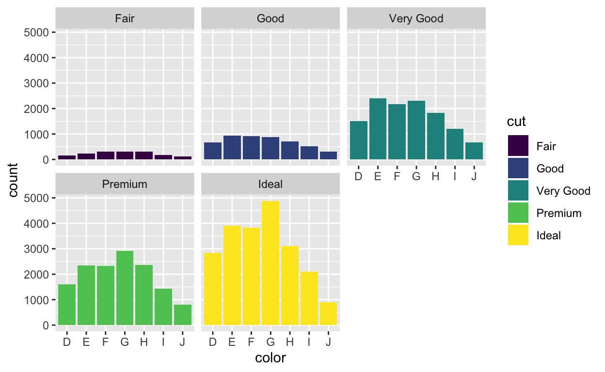
facet_grid()
ggplot2 provides two functions for faceting. facet_grid() divides the plot into a grid of subplots based on the values of one or two faceting variables. To use it, add facet_grid() to the end of your plot call.
The code chunks below, show three ways to facet with facet_grid(). Spot the differences between the chunks, then run the code to learn what the differences do.
ggplot(data = diamonds) +
geom_bar(mapping = aes(x = color)) +
facet_grid(clarity ~ cut)ggplot(data = diamonds) +
geom_bar(mapping = aes(x = color)) +
facet_grid(. ~ cut)ggplot(data = diamonds) +
geom_bar(mapping = aes(x = color)) +
facet_grid(clarity ~ .)facet_grid() recap
As you saw in the code examples, you use facet_grid() by passing it a formula, the names of two variables connected by a ~.
facet_grid() will split the plot into facets vertically by the values of the first variable: each facet will contain the observations that have a common value of the variable. facet_grid() will split the plot horizontally by values of the second variable. The result is a grid of facets, where each specific subplot shows a specific combination of values.
If you do not wish to split on the vertical or horizontal dimension, pass facet_grid() a . instead of a variable name as a place holder.
facet_wrap()
facet_wrap() provides a more relaxed way to facet a plot on a single variable. It will split the plot into subplots and then reorganize the subplots into multiple rows so that each plot has a more or less square aspect ratio. In short, facet_wrap() wraps the single row of subplots that you would get with facet_grid() into multiple rows.
To use facet_wrap() pass it a single variable name with a ~ before it, e.g. facet_wrap( ~ color).
Add facet_wrap() to the code below to create the graph that appeared at the start of this section. Facet on cut.
ggplot(data = diamonds) +
geom_bar(mapping = aes(x = color, fill = cut))ggplot(data = diamonds) +
geom_bar(mapping = aes(x = color, fill = cut)) +
facet_wrap( ~ cut)scales
By default, each facet in your plot will share the same \(x\) and \(y\) ranges. You can change this by adding a scales argument to facet_wrap() or facet_grid().
scales = "free"will let the \(x\) and \(y\) range of each facet varyscales = "free_x"will let the \(x\) range of each facet vary, but not the \(y\) rangescales = "free_y"will let the \(y\) range of each facet vary, but not the \(x\) range. This is a convenient way to compare the shapes of different distributions:ggplot(data = diamonds) + geom_bar(mapping = aes(x = color, fill = cut)) + facet_wrap( ~ cut, scales = "free_y")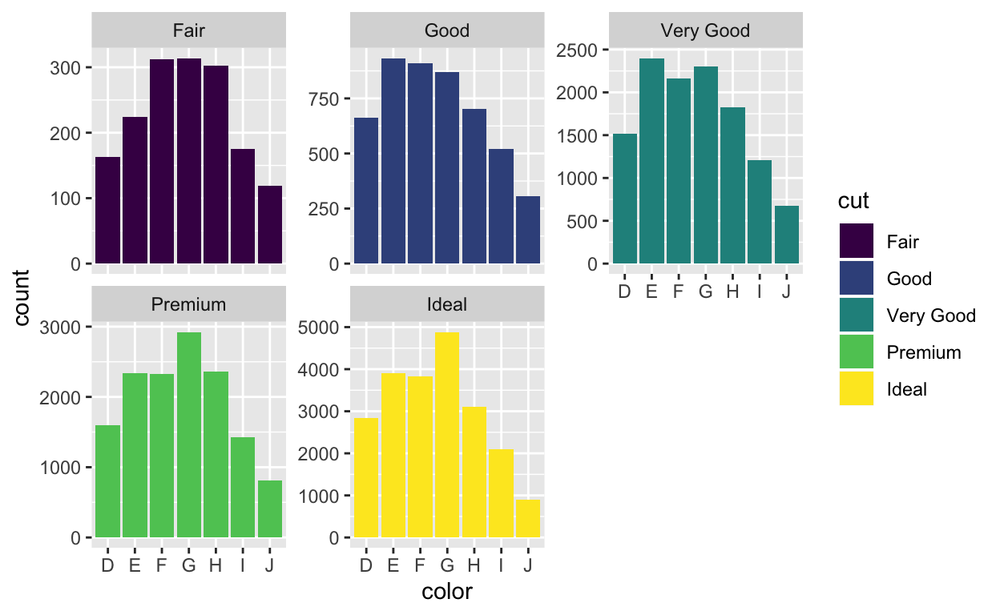
Recap
In this tutorial, you learned how to make bar charts; but much of what you learned applies to other types of charts as well. Here’s what you should know:
- Bar charts are the basis for histograms, which means that you can interpret histograms in a similar way.
- Bars are not the only geom in ggplot2 that use the fill aesthetic. You can use both fill and color aesthetics with any geom that has an “interior” region.
- You can use the same position adjustments with any ggplot2 geom:
"identity","stack","dodge","fill","nudge", and"jitter"(we’ll learn about"nudge"and"jitter"later). Each geom comes with its own sensible default. - You can facet any ggplot2 plot by adding
facet_grid()orfacet_wrap()to the plot call.
Hadley Wickham (2014, “Tidy Data” in Journal of Statistical Analysis) adds another condition—“Each type of observational unit forms a table”.↩︎